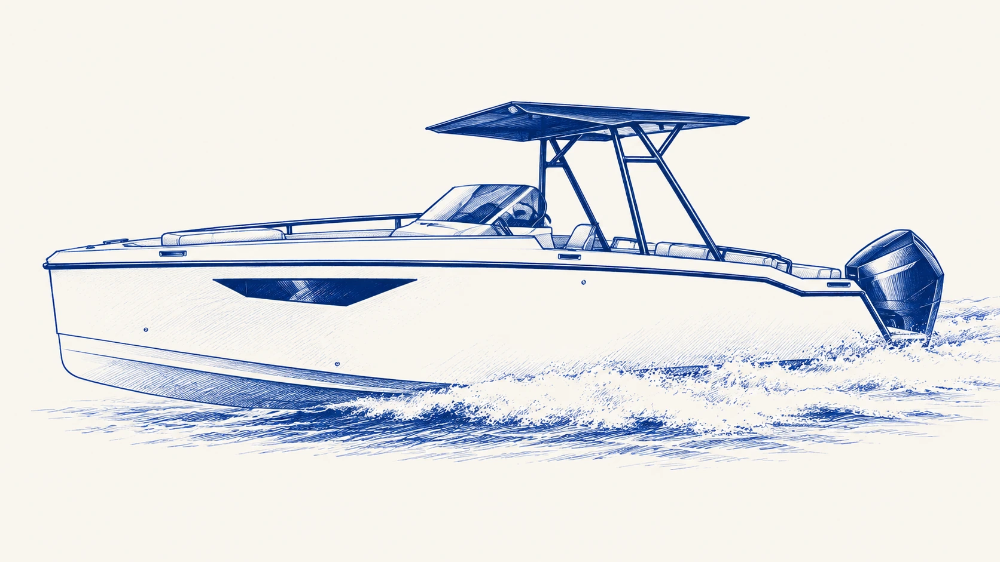

VESSELS & MARINE INNOVATION
UX Marine

Marine product and vessel development, including the Noordic range. Its work connects vessel architecture, onboard systems, manufacturing coordination and the practical experience of ownership and operation.
DESIGN / DEVELOPMENT / VESSELS